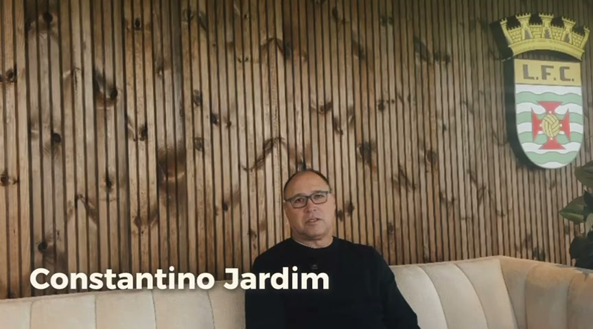
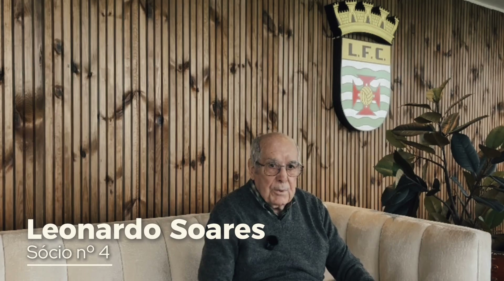

Entrevista
Constantino Jardim
Uma das figuras históricas do futebol do Leça FC partilha as suas memórias e vivências do clube.
Ver entrevista

Entrevista
Leonardo Soares
O segundo sócio mais antigo do clube partilha décadas de história, de paixão e de pertença ao Leça FC.
Ver entrevista
Entrevista
Luís Gentil
Um ex-jogador do Leça FC recorda os anos em que vestiu as cores verde e branca e os momentos que ficaram para sempre na sua memória.
Ver entrevista
Documentário
A Evolução do Futebol
Como o jogo mudou ao longo das décadas — regras, equipamentos, táticas — vista pela perspetiva do Leça FC.
Ver vídeo